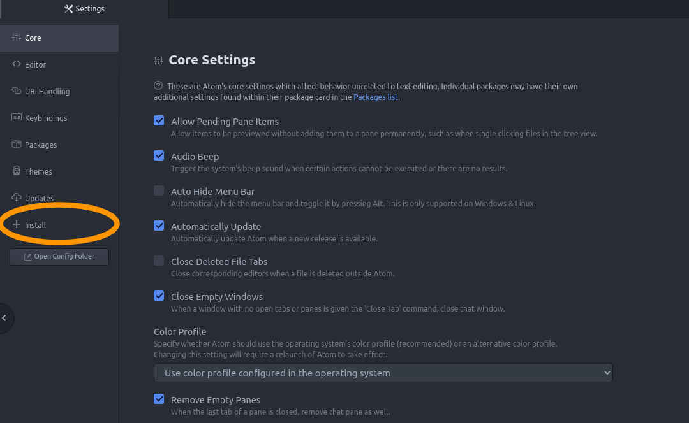
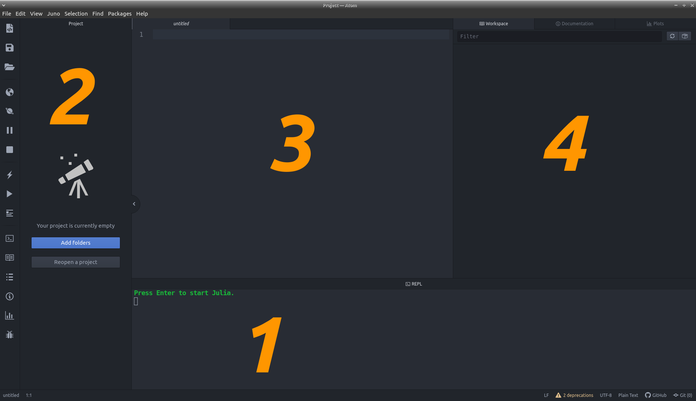

Мова Програмування Julia
Julia – це динамічна мова програмування загального призначення з убудованою підтримкою паралельних та наукових обчислень. Синтаксично не складніше за Python, за швидкістю як C, ідейно логічна. Її перевага, окрім швидкості, в тому, що код на Julia виглядає математично, а писати нею просто приємно. Ідеальна мова для обчислювальних експериментів, тому їй і варто приділити увагу. До того ж, вона вміє дуже просто взаємодіяти з Python, C та Fortran.
Перші кроки
Найпростіший варіянт установити Julia – це завантажити редактор Atom (під будь-яку ОС) та додаток Juno до нього*. Власне, сам редактор завантажується елементарно з сайту, а процес установлення Juno маю на меті показати. Альтернативно, ви можете завантажити Julia з офіційного сайту і користуватися іншими редакторами коду замість Atom.
* – На жаль, було повідомлено про скасування подальших оновлень таких інструментів як Atom і Juno, але це все ще гарний спосіб установити мову Julia й працювати з нею. Я оновлю цю сторінку, коли буде альтернатива, або коли сформуються оновлювані копії цих програм від користувачів.
У середовищі редактора Atom натискаємо Ctrl+, (контроль+кома), далі у відритій вкладці налаштувань:
Далі в рядку пошуку друкуємо "Juno" й завантажуємо "uber-juno":
Чекаємо, поки все завантажиться й перезапускаємо Atom. Інтерфейс редактору має трохи змінитись (див. скріншот нижче)

1) REPL – інтерактивний консольний режим. Можна вводити невеличкі фрагменти коду по одному, вони будуть запускатись і обчислюватись тут. Фактично, використовувати можна як науковий калькулятор.
2) Каталог проєктів, відкриває папки та допомагає орієнтуватися, лівіше знаходиться додаткова панель інструментів.
3) Основне поле, де редагуються файли. При першому запуску тут може бути відкрити окрема вкладка з демонстраційною сторінкою, можете поставити ґалочку, аби вона не відкривалася надалі.
4) Додаткові вкладки (Workspace, Documentation, Plots), їх можна злити з вкладками файлів. У першій будуть з'являтися всі створені змінні, константи та функції з їх значеннями. Друга призначена для пошуку документації для вбудованих або підключених пакетів чи функцій, працює навіть офлайн. Третя – місце для відображення графіків та малюнків, створених кодом.
Для демонстрації різних варіянтів запуску коду, спочатку варто запустити Julia. Поставте курсор в REPL, натисніть клавішу "Ентер". Перший запуск може зайняти деякий час, адже деякі компоненти мають довстановитися. У цілому, є два методи запуску коду: в інтерактивному режимі та запуск коду з файлу. Для прикладу візьмемо код println("Вітаємо в Julia"), що друкує текст "Вітаємо в Julia". Альтернативно, можете спробувати рядок cos(π/2) або cos(pi/2), який власне рахує косинус від π/2 (отримаєте дуже маленьке число близьке до нуля).
Після того як ви побачите julia> в REPL можете вставити код прямо туди й натиснути ентер. Під вашим рядком введення отрмаєте відповідь і керунок перенесеться знову на рядок вводу.
julia> println("Вітаємо в Julia")
Вітаємо в Julia
julia> cos(pi/2)
6.123233995736766e-17
Для запуску коду з файлу, потрібно створити новий файл коду Джулії (Ctrl+N), такі файли зберігаються з розширеннями .jl. Після того як ви створили файл, можете вставити декілька рядків коду та зберегти його. Поставивши курсор на рядок з кодом і натиснувши Ctrl+Enter ви запустите цей рядок коремо й отримаэте результат або поруч, або в REPL. Аби запустити весь файл разом, натисніть Ctrl+Shift+Enter.
Базовий синтаксис
Перейдемо до синтаксису.
x = 10 # ціла числова змінна x, що дорівнює 10
a = "hello" # текстова змінна а, що дорівнює "hello"
с = 'ї' # символьна змінна c, що дорівнює символу 'ї' (одинарні лапки)
variable3 = 4.333 # дробова змінна variable3, що дорівнює 4.333
complex1 = 1+2im # комплексна числова змінна complex1, що дорівнює 1+2i
a = complex1 # тепер змінна а дорівнює complex1, що дорівнює 1+2i
Зверніть увагу, що будь-який текст на рядку після # або відділений на багатьох рядках так: #= текст =# абсолютно ігнорується і є коментарем.
Основні арифметичні та алгебраїчні операції позначаються в цілому природнім чином: + - * / ^ % sqrt cos sin tan
Для задання функцій є два різних синтаксиси (насправді більше, однак зосередимося на цих виразах). Перший більш математичний, але не підходить для задання складних функцій.
# ====
f(x) = x^2 - 4x + 17 # квадратична функція f(x)
G(x, y) = -y^2 - x*y + x^2 - 4x + 2 # функція G(x, y) від двох змінних
# виклик функцій
f(1)
G(2, 3.5) + G(100, 1+2im)
# ====
Задання функцій в один рядок.
# ====
function f(x)
x^2 - 4x + 17
end
function G(x, y)
return -y^2 - x*y + x^2 - 4x + 2
end
# виклик функцій
f(1)
G(2, 3.5) + G(100, 1+2im)
# ====
Кодове слово return для позначення значення, яке повертатиме функція опціональне в мові Julia. За замовчуванням, результат роботи останнього рядку повертається.
# ====
foo(x, y) = x + y # перший метод foo
# другий метод foo
function foo(x::Number)
x^2
end
# третій метод foo
function foo(str::String)
return str*" - заданий рядок"
end
# ====
Одна з потужних особливостей мови Julia це те, що можна задати одній функції декілька методів, а компілятор сам підбере необхідний при виклику функції.
В останньому прикладі ліворуч перший варіянт foo спрацює при передачі foo будь-яких двох арґументів. Другий варіянт foo спрацює, якщо передати foo якесь одне число в якості арґумента (повернеться квадрат оцього числа). Третій - якщо передати текстовий рядок (повернеться той самий рядок із текстом " - заданий рядок" укінці).
Тепер поглянемо на умовні блоки та цикли. Як можна бачити з блоку створення фукнцій function ... end, блоки коду (окремі фрагменти) мають закінчуватися на кодове слово end. Аналогічно й із блоками умов if ... end, if ... else ... end, if ... elseif ... else ... end:
# ====
if a == b # якщо a рівне b
...
elseif a == c # інакше, при a рівне c
...
else # інакше
...
end
Підблоки elseif та else - опціональні, а блоків elseif може бути скільки потрібно підряд.
Далі наведено приклади циклів - конструкцій, що повторюють блоки коду, допоки виконується певна умова.
# ====
while a < b # поки a менше b
...
a = ...# потрібно змінювати a, аби цикл не був нескінченним
end
Підблоки elseif та else - опціональні, а блоків elseif може бути скільки потрібно підряд.
# ====
for i in a:b # повторити для всіх i з проміжку від a до b
...
end
Фактично a:b формує перелік чисел від a до b з кроком 1. Можна змінити крок на довільне k a:k:b. Альтернативно, можна замінити на довільний перелік (вектор, кортеж, множина тощо). Наприклад, вектор з трьох чисел [5.3, -100, pi].
Математика й масиви
Тепер до синтаксичних та функціональних переваг мови. Вирази вищої математики тут виглядають природньо й математично (як скажімо й один зі способів задання функцій). Та спершу розберемося з векторами, матрицями й масивами загалом. Власне, в Julia існує таке поняття як масив - впорядкований за індексами набір даних. Технічно, масиви мають містити однотипні елементи, однак, якщо ви зробите масив з 0 елементів (порожній масив, тип елементів неможливо встановити) або декількох елементів несумісного типу, то компілятор підбере тип масиву автоматично як Any - будь-що. Взагалі, в Julia доволі розвинена система типізації даних, одна з найкращих серед сучасних мов, однак зараз не про неї. Нам лише потрібно знати, що для типізації масиву компілятор обирає "мінімальний" тип, який зможе описати всі елементи масиву.
julia> arr = ["текст", 10.5] # одновимірний масив (вектор) arr типу Any
2-element Vector{Any}:
"текст"
10.5
julia> arr = [0, 10] # вектор цілочисельного типу
2-element Vector{Int64}:
0
10
julia> arr = [0.0, 10] # вектор десятичного чисельного типу
2-element Vector{Float64}:
0.0
10.0
julia> arr[1] # беремо перший елемент з arr
0.0
Вектор у Julia - це одновимірний масив, тобто це масив, де в кожного елементу один індекс. Матриця - двовимірний масив.
julia> A = [1. 2
2 1]
2×2 Matrix{Float64}:
1.0 2.0
2.0 1.0
julia> A = [1. 2; 2 1] # альтернативний спосіб
2×2 Matrix{Float64}:
1.0 2.0
2.0 1.0
julia> A[1, 1] # беремо перший елемент з A
1.0
Julia має вбудоване множення векторів та матриць, ба більше, загалом багато вбудованих оперцій з лінійної алгебри:
julia> A*arr # множення на вектор arr
2-element Vector{Float64}:
20.0
10.0
julia> A*[1 0 0; 0 1 0] # помножимо A на якусь іншу неквадратну матрицю
2×3 Matrix{Float64}:
1.0 2.0 0.0
2.0 1.0 0.0
julia> A' # транспонуємо (але матриця симетрична)
2×2 adjoint(::Matrix{Float64}) with eltype Float64:
1.0 2.0
2.0 1.0
julia> A'A # транспонуємо й помножимо на саму A
2×2 Matrix{Float64}:
5.0 4.0
4.0 5.0
julia> 2A # або A*2 - помножимо на константу 2
2×2 Matrix{Float64}:
2.0 4.0
4.0 2.0
julia> A^2 # A у квадраті (сама на себе)
2×2 Matrix{Float64}:
5.0 4.0
4.0 5.0
julia> A^0.5 # корінь квадратний з A (комплексна матриця)
2×2 LinearAlgebra.Symmetric{ComplexF64, Matrix{ComplexF64}}:
0.866025+0.5im 0.866025-0.5im
0.866025-0.5im 0.866025+0.5im
Як бачимо з останнього обчислення \(\sqrt{A}\) в Джулії передбачені навіть такі високоматематичні операції як взяття матричного кореня. Так само тут передбачені й взяття матричних синусу, косинусу, експоненти й так далі. До речі, можна помітити, що такі складні математичні операції займають певний час для виконання в середовищі. Це факт, однак 99% цього часу - компіляція функцій. Тобто створення самої функції як такої в машинному коді, до цього Джулія знає лише про сам факт існування таких методів. Після компіляції (що для Julia еквівалентно першому виклику функції) всі функції працюють миттєво (спробуйте повторити дію й результат отримаєте набагато швидше, навіть трохи змінивши вхідні дані). Більше про це нижче в "Компіляція та швидкість".
julia> julia> sin(A)
2×2 Matrix{Float64}:
-0.350175 0.491295
0.491295 -0.350175
julia> cos(A)
2×2 Matrix{Float64}:
-0.224845 -0.765147
-0.765147 -0.224845
julia> exp(A)
2×2 Matrix{Float64}:
10.2267 9.85883
9.85883 10.2267
А що як нам потрібно піднести до степеня чи порахувати якусь функцію не від усієї матриці, а від кожного її елемента, поелементно? Це робиться дуже просто за допомогою крапки. Аналогічно це працює, до речі, не тільки для матриць, а й для масивів будь-якого вигляду.
julia> A.^2 # всі елементи A у квадраті
2×2 Matrix{Float64}:
1.0 4.0
4.0 1.0
julia> sin.(A) # синус від усіх елементів A
2×2 Matrix{Float64}:
0.841471 0.909297
0.909297 0.841471
julia> p(x) = x^2 - 2x + 1 # задаємо довліьну функцію p(x)
p (generic function with 1 method)
julia> p.(A) # запускаємо p(x) на всіх елементах A
2×2 Matrix{Float64}:
0.0 1.0
1.0 0.0
julia> A .+ 1 == A .+ [1 1; 1 1] # поелементне додавання числа й поелементне додавання іншої матриці такого ж розміру (рівні в даному випадку)
true
julia> 2arr == arr .* 2 # еквівалентні множення вектора на скаляр та поелементне множення масиву
true
Для інших речей з лінійної алгебри, на кшталт оператора ідентичности, розкладів матриць тощо, потрібно підключити відповідну бібліотеку.
julia> using LinearAlgebra
julia> A*I
2×2 Matrix{Float64}:
1.0 2.0
2.0 1.0
julia> svd(A) # singular value decomposition (розклад матриці A)
SVD{Float64, Float64, Matrix{Float64}}
U factor:
2×2 Matrix{Float64}:
-0.707107 -0.707107
-0.707107 0.707107
singular values:
2-element Vector{Float64}:
2.9999999999999996
1.0
Vt factor:
2×2 Matrix{Float64}:
-0.707107 -0.707107
0.707107 -0.707107
Графіки та бібліотеки
Раз уже ми говоримо про якісь бібліотеки чи пакети (тобто додатки до самої Джулії), то варто показати, як встановлюються додаткові пакети. Зазвичай це робиться двома рядками коду в самому середовищі Джулії.
julia> import Pkg; Pkg.add("ІМ'Я ПАКЕТУ")
julia> import Pkg; Pkg.add("Plots") # наприклад установимо Plots
Надалі, після встановлення, можна просто писати в програмах using Plots та користуватися тим, що додає цей пакет. А конкретно, Plots дозволяє малювати графіки й діяграми. Наприклад, створіть файл з наступним кодом (раджу запускати його порядково, аби зрозуміти що відбувається з кожним кроком)
using Plots # підключаємо Plots
xs = -4:0.1:4 # робимо перелік чисел від -4 до 4 з кроком 0.1
cosx = cos.(xs) # рахуємо від усіх чисел переліку xs косинус та зберігаємо в cosx
sinx = sin.(xs) # рахуємо від усіх чисел переліку xs синус та зберігаємо в sinx
plot(xs, cosx, label="cos(x)") # малюємо графік косинуса, на легенді діяграми пишемо "cos(x)"
plot!(xs, sinx, label="sin(x)") # додаємо графік синуса на ту саму діяграму, на легенді діяграми пишемо "sin(x)"
plot - функція, що приймає два одновимірних масиви однакового розміру, які задають набір точок графіку (ікси та ігреки, умовно). додатково можна передати ім'я функції для позначення. Для того аби додати графік на попередній, а не створювати абсолютно нову картинку, використовується plot! (у цілому, знаком оклику позначаються функції, що можуть змінювати значення зовні себе).
Насправді, в бібліотеці Plots суть купа інших речей. З її допомогою можна відмалювати майже будь-що.
Компіляція та швидкість
Джулія – JIT-компільована мова (Just In Time Compilation - вчасна компіляція). У поєднанні з її парадигмою множинної диспетчеризації або мультиметоду (multiple dispatch, про це вже йшлося в особливостях синтаксису задання функцій) це призводить до цікавих особливостей та швидкісних переваг над, наприклад, Python. Як тільки ми захочемо використати певну функцію чи її метод (варіянт), компілятор скомпілює її, й подальші використання цієї функції такого вигляду будуть миттєвими. До того як ми захочемо використовувати таку функцію й уперше викличемо її, навіть якщо ми задали її в коді явно, скомпільованою (тобто переведеною в машинний код та готовою до швидкого використання програмно) вона не буде.
Задавши функцію та не вказавши чітко тип значень, які вона приймає, наприклад так f(x, y) = x*y, а не так f(x::Int64, y::Int64)::Int64 = x*y, ми зможемо використовувати її автоматично й ефективно на будь-яких данних, адже компілятор буде компілювати для всіх типів даних новий сумісний варіянт f щойно нам знадобиться використати її певним чином. Швидкість від відсутности типізації ми не втрачаємо, а тільки здобуваємо універсальність. Тобто, викликавши f(1, 2) ми спричинемо компіляцію чогось типу f(x::Int64, y::Int64)::Int64 = x*y для цілих чисел, а наступні виклики, скажімо, f(400, -19) чи f(0, 0) будуть працювати швидко. Можемо викликати f("hello", "world"), спричинивши компіляцію альтернативи f(x::String, y::String)::String = x*y, яка буде склеювати два рядки в один (множення двох рядків у Джулії робить саме це).
Можна навіть подивитися на окремі скомпільовані методи функцій за допомогою спеціяльних макросів (вважайте що макроси – це просто спеціяльні слова мови Джулія, що починаються з @): @code_native – переглянути машинний код функції; @code_llvm – переглянути LLVM код функції (передує машинному в компіляції, тобто більш абстрактний та читабельний код); @code_typed, @code_lowered – іще більш високорівневий та читабельний формат коду. Детальніше англійською тут.
julia> @code_native f(1,2) # подивитися код скомпільований для цілих чисел
julia> @code_native f("a", "b") # подивитися код скомпільований для рядків
Важливо: код, що не загорнутий у функції в Julia не компілюється! Це означає, що він виконуватиметься кожного разу за не дуже швидкий час, там не можна строго типізувати змінні, а важкий і повторюваний код буде суттєво вповільнувати програму. Тому все, що можна згрупувати до функцій; усе, що повторюється, варто загортати до функцій та викликати.
До речі, ще один корисний макрос (так, нам тут доводиться розглядати декілька часткових випадків макросів, не кажучи про їх загалом) – @inbounds. Перед поясненням, що саме він робить варто пояснити ще дещо. У високорівневих мовах (як-от Python чи Julia) вирази індексації типу a[i] ховають під собою не просто взяття елементу за індексом, а ще й перевірку чи існує цей індекс у масиві взагалі. Це, звісно, корисно, щоб не натрапити на страшну помилку, однак така перевірка забирає відносно багато часу, особливо, коли таких "взяттів за індексом" у нас дуже багато. В мовах як С чи С++ такої перевірки немає. Julia всюди хоче наздоганяти С за швидкістю, саме тому для цього існує @inbounds, що вимикає такі перевірки. Використовувати його бажано тільки, коли точно знаємо, що наш індекс не "вилетить за межі масиву". Ставиться цей макрос перед циклом for, що пробігається по індексу:
@inbounds for i in 1:length(a) # швидко пройдемо всі елементи масиву а
println(a[i])
end
Щоправда, конкретний код вище багато сенсу, окрім демонстрації синтаксису не має, адже в даному випадку можна просто зробити наступний аналогічний цикл:
for el in a
println(el)
end
Можна багато чого сказати про ефективність коду Джулії, однак це виходить за межі оглядової статті. Якщо казати про загальні зауваження щодо ефективного коду, що не залежать від мови програмування, то раджу звернутися до теорії, порад, та й загалом статті про комп'ютерні науки англійською.